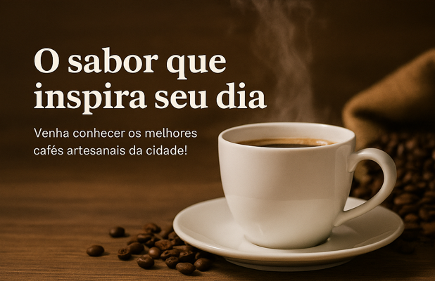

No coração de cada xícara está uma história. Na Grão Dourado, nós torramos, moemos e servimos cafés especiais selecionados, vindos das melhores fazendas do Brasil e do mundo. Experimente aromas únicos e viva momentos inesquecíveis.
Apaixonados por Café
Somos mais que uma cafeteria — somos uma experiência. Fundada por amantes do café, nossa missão é transformar cada xícara em uma viagem sensorial. Da fazenda à sua mesa, valorizamos cada etapa, com grãos de origem controlada e torrefação artesanal.
- Grãos 100% arábica
- Origem sustentável
- Apoio a produtores locais
- Café fresco todos os dias
Contato
Rua dos Baristas, 123 – Seu Estado, BR(85) 99999-9999
contato@cafeteriaexemplo.com